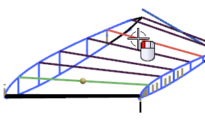
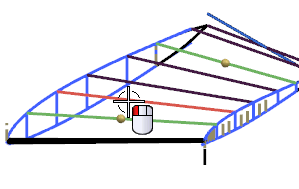
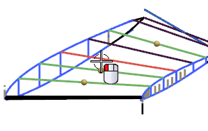
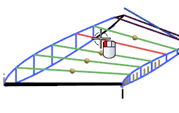
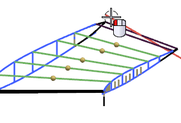
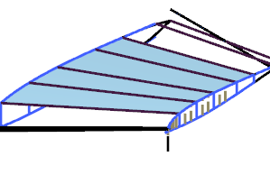

创建中间曲面
-
点击曲面工具条上的截面曲面
 。
。 -
在类型组的列表中，选择五点。
-
选择如图所示的起始引导线。

-
单击鼠标中键以前进至下一步，然后选择如图所示的终止引导线。

-
单击鼠标中键以前进至下一步，然后选择如图所示的第一内部引导线 1。

-
单击鼠标中键以前进至下一步，然后选择如图所示的内部引导线 2。

-
单击鼠标中键以前进至下一步，然后选择如图所示的内部引导线 3。

-
单击鼠标中键以前进至下一步，然后选择如图所示的脊线。

-
点击应用。
